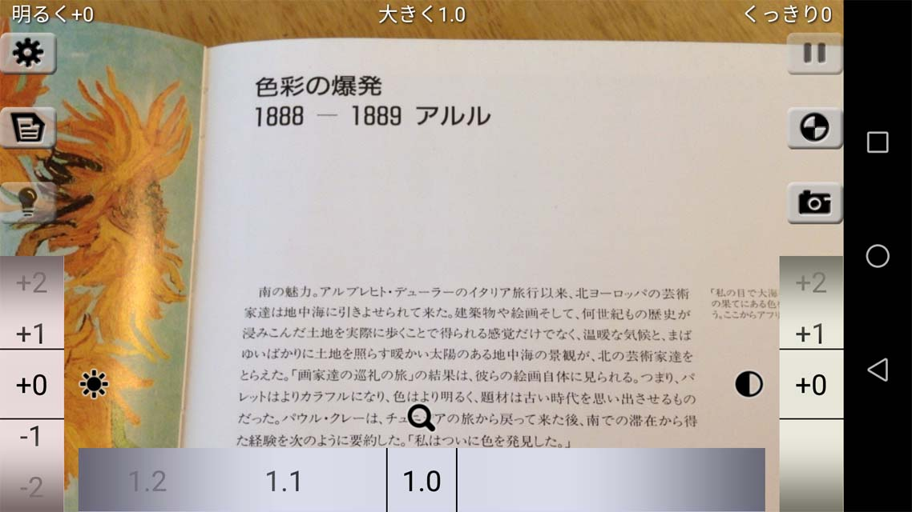
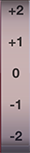
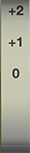
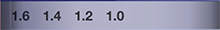
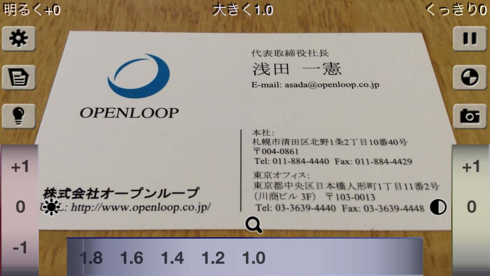
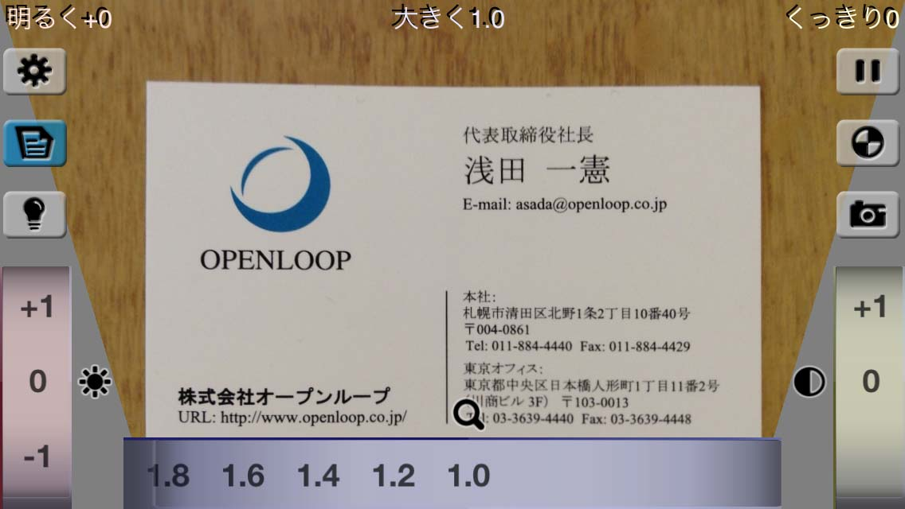
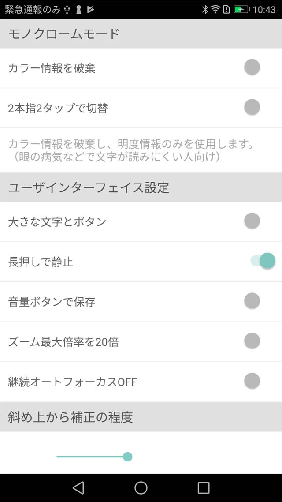

明るく大きく
「明るく大きく」は、老視や眼の病気などで小さな文字などが読みにくい人のための読字補助ツールです。
人は誰でも加齢と共に眼の水晶体の機能が衰え、小さな字が読みにくく、視界も暗くなります。また、白内障や弱視など、眼の病気が原因で文字が読みにくくなることもあります。
このアプリは、小さな文字を、色彩処理により「明るく」、「大きく」、「くっきり」とさせて、快適に読むための補助をします。

基本的な使用方法
使用方法は簡単です。
-
フォーカスと露出を合わせる。
まず、見たい物にスマートデバイスのカメラを向けましょう。もし、フォーカス（ピント）や露出が合っていない場合は、スクリーン上の見たい部分を1本指でタップしてください。アプリが自動的にフォーカスと露出を合わせます。(サポートしていないデバイスもあります。)
-

 「明るく」を調整する。
「明るく」を調整する。
スクリーン左下の「明るく」ダイヤルで、明るさを調整しましょう。-5〜+5までの間で調整することができます。数値が小さいほど暗く、大きいほど明るく見えるようになります。数値1について明るさが5%変わります。
-

「くっきり」を調整する。
スクリーン右下の「くっきり」ダイヤルで、コントラストを調整しましょう。0〜+10までの間で調整することができます。数値が大きくなるほど、くっきり見えるようになります。
-

 「大きく」を調整する。
「大きく」を調整する。
スクリーン下中央の「大きく」ダイヤルで、大きさを調整しましょう。1.0〜10.0倍までの間で拡大率を調整することができます。ズームは2本指によるスクリーンのピンチ動作でも行うことができます。設定画面の「ズーム最大倍率を20倍」をONにすると、最大倍率は20倍になります。
-
2〜4を繰り返して、綺麗に読めるように微調整してください。きっと読みやすくなるはずです。
-
最後に操作してから10秒が経過するとすべてのダイヤル／ボタン／文字が消えます。スクリーンをタップしたり、デバイスを回転するとまた現れます。
高度な使用方法
少し高度な使用方法をご紹介します。
-
静止ボタン
このボタンを押すと、ディスプレイ中の動画像が一時停止し、静止画像になります。再度押すとまた動画像に戻ります。静止画像も、明るく・大きく・くっきりと調整することができます。また、静止中はパン操作（スクリーンを指一本でタップしたまま動かす）によりスクロールすることができます。「静止」は「長押しで静止」がONのときは、指によるスクリーンの長押し（ロングプレス）でも行うことができます。
-
明度反転ボタン
このボタンを押すと、明度が反転します。白地に黒の文字は、黒字に白となり、白内障の人は特に読みやすさが向上します。
-
保存ボタン
読みやすくした画像を、そのまま”ギャラリー”に保存することができます。
-
カメラ・ファイル切替ボタン
画像入力元の選択ボタンを表示します。
-
リアカメラ切替ボタン
画像入力をリアカメラに切り替えます。
-
フロントカメラ切替ボタン
画像入力をフロントカメラに切り替えます。フロントカメラ使用時は、スクリーンには左右が反転した鏡像が表示されます。
-
画像ファイル切替ボタン
「ギャラリー」に保存してある画像ファイルを選択して使用できます。
-
設定ボタン
各種の設定を行います。（下記）
-
斜め上からボタン
机上など水平に本や書類などを置き、斜め上からそれを見た場合、対象が台形状に歪みます。それを補正して真上から見た状態に近づける機能「斜め上から補正」（逆投影変換）をON/OFFします。補正の程度は、本機能がON時にスクリーン下部を2本指でピンチするか、設定メニューの「斜め上から補正の程度」で調整できます。
オリジナル（左）、斜め上から補正後（右）


-
トーチボタン
トーチライトを搭載しているデバイスでは、このボタンによりライトを点灯／消灯することができます。明るさが足りないときにお使いください。
-
継続オートフォーカスOFFボタン（一部のデバイスではサポートしていません。）
継続的にオートフォーカスを行う機能をOFFにし、スクリーン上のタップした部分にフォーカスを合わせます。デバイスを台などに固定して使用するときに便利です。「設定」画面でも変更できます。
- リセット
スクリーンを1本指でダブルタップすると、「明るく」、「大きく」、「くっきり」、「明度反転」、パンがすべてリセットされます。
デバイスを振る（シェイクする）と、上記に加えて「静止」状態が解除されます。
設定画面
各種設定を行います。

- モノクロームモード
- カラー情報を破棄
カメラ入力画像のカラー情報を破棄し、明度情報のみを使用して表示します。眼の病気などで字が読みにくい人は、この設定により読みやすさが向上する場合があります。（初期値：OFF）
- 使用する色
モノクローム（またはデュオクローム）で使用する色を指定します。指定した色または色の組合せ（色度情報のみ）が使用されます。
たとえば、「水色」などの1色指定（モノクローム）の場合は、水色の色度を持つ色を表示します。
「黄と青」など2色指定（デュオクローム）の場合は、明るい（明度が高い）ときは黄の色度を持つ色を表示し、暗く（明度が低く）なるにしたがって青の色度を持つ色を表示します。色度は、明度に応じて、明暗2色の線形補間で決定されます。
なお、「使用する色」は「カラー情報を破棄」がONのときに、2本指でスクリーンをダブルタップすることによって次の色に切り替えることができます。（初期値：無彩色）
-
カスタムカラーを選択
「カスタム（1色）」選択時に使用する色を指定します。（色度のみ使用）（初期値：黄緑 (R 67%, G 100%, B 0%)）
-
カスタムカラー（明）を選択
「カスタム（2色）」選択時に使用する色のうち、明るい（明度がもっとも高い）ときに使用する色を指定します（色度のみ使用）。無彩色を指定したい場合は白を選択してください。（初期値：黄 (R 100%, G 100%, B 0%)）
-
カスタムカラー（暗）を選択
「カスタム（2色）」選択時に使用する色のうち、暗い（明度がもっとも低い）ときに使用する色を指定します（色度のみ使用）。無彩色を指定したい場合は白を選択してください。（初期値：紫 (R 50%, G 0%, B 100%)）
-
2本指2タップで色切替
スクリーンを2本指でダブルタップすると、「使用する色」がメニューの順番で次々に切り替わるようにします。
- ユーザインターフェイス設定
- 大きな文字とボタン
メイン画面で表示するボタンと文字を大きくします。（初期値：OFF）
- 長押しで静止
「静止ボタン」に加え、指によるスクリーンの長押し（ロングプレス）で画像を静止するようにします。（初期値：ON）
- 音量ボタンで保存
「保存ボタン」に加え、デバイス横の音量調節ボタン押下で画像を保存するようにします。（初期値：OFF）
- ズーム最大倍率を20倍
ズーム最大倍率を20倍にします。（通常は10倍）（初期値：OFF）
- 継続オートフォーカスOFF (サポートしていないデバイスもあります。)
継続的にオートフォーカスを行う機能をOFFにし、スクリーン上のタップした部分にフォーカスを合わせます。デバイスを台などに固定して使用するときに便利です。「継続オートフォーカスOFFボタン」と同じです。（初期値：OFF）
- 斜め上から補正の程度
「斜め上から補正」の程度を調整します。（「斜め上からボタン」がONのときに使用されます。）スライダーを左にするほど補正程度が強く、右にするほど弱くなります。補正の程度は、斜め上から補正がONのときにスクリーン下部を2本指でピンチしても調整できます。ピンチ中は赤でピンチエリアを表示します。（設定可能範囲：台形の下底÷上底＝0.2〜1.0）（初期値：0.5）
- リセット
「設定画面」のすべての設定を初期値に戻します。
- マニュアル表示
マニュアルを表示します。
- アプリケーション情報
アプリケーション情報を表示します。
使用可能ジェスチャー一覧
- 1本指タップ
静止状態でないときは、タップした場所にフォーカスと露出を合わせます。（サポートしていないデバイスもあります。）
ダイヤルや文字を再表示します。（最後に操作してから10秒以上が経過し、ダイヤルや文字が非表示状態のとき）
- 1本指ダブルタップ
「明るく」、「大きく」、「くっきり」ダイヤルの値と「明度反転」、パンをすべて初期値に戻します。
- 1本指パン
スクリーンに映っている画像の上下左右に更にカメラ画像があるときは、指を動かした方向にパンニング（スクロール）します。（静止状態のとき）
- 1本指ロングプレス
静止状態でないときは、ロングプレスで静止します。
静止状態のときは、ロングプレスで静止を解除し、動画状態にします。
- 2本指ダブルタップ
「色情報を破棄」がOFFのときは、ONになります。「色情報を破棄」がONのときは「使用する色」を次の色に切り替えます。「色情報を破棄」がONで「使用する色」が「カスタム（2色）」のときは「色情報を破棄」をOFFにします。（「2本指2タップで色切替」がONのとき）
- 2本指ピンチ
拡大または縮小します。「大きく」ダイヤルを操作するのと同じです。
- 2本指ピンチ（スクリーン下部）
「斜め上から補正の程度」を強くまたは弱くします。（「斜め上から補正」がONのとき）
- シェイク
「明るく」、「大きく」、「くっきり」ダイヤルの値と「明度反転」、パンをすべて初期値に戻し、静止状態を解除します。
その他
- 本アプリケーションソフトウェアは、白内障や弱視の人にも操作しやすいように配慮されています。
- 本アプリケーションソフトウェアは、浅田一憲（医学博士・メディアデザイン学博士）によって開発され、無料でリリースされています。
- Powered by NumberPicker, Copyright © 2018 ShawnLin013 (MIT license).
「明るく大きく」ウェブサイト http://asada.website/brighterandbigger/
Copyright © 2011-2023 by Kazunori Asada.